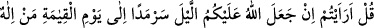
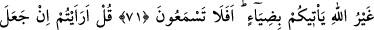
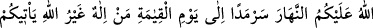
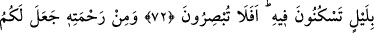
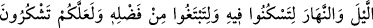
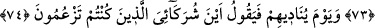
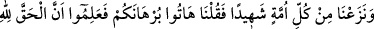
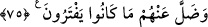
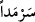
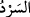

DÜŞÜNDÜNÜZ MÜ HİÇ?
71. (Ey Muhammed!) De ki: Düşündünüz mü hiç, eğer Allah üzerinizde geceyi ta
kıyamet gününe kadar aralıksız devam ettirse, Allah’tan başka size bir ışık
getirecek tanrı kimdir? Hâlâ işitmeyecek misiniz?
72. De ki: Söyleyin bakalım, eğer Allah üzerinizde gündüzü ta kıyamet gününe
kadar aralıksız devam ettirse, Allah’tan başka, istirahat edeceğiniz geceyi size
getirecek tanrı kimdir? Hâla görmeyecek misiniz?
73. Rahmetinden ötürü Allah, geceyi ve gündüzü yarattı ki geceleyin
dinlenesiniz, (gündüzün) O’nun fazlu kereminden (rızkınızı) arayasınız ve
şükredesiniz.
74. O gün Allah onları çağırarak: Benim ortaklarım olduklarını iddiâ ettikleriniz
hani nerede? diyecektir.
75. (O gün) her ümmetten bir şahit çıkarır, (kâfirlere): Kesin delilinizi getirin!
deriz. O zaman bilirler ki hakikat Allâh’a âiddir ve uydura geldikleri şeyler
(putlar) da kendilerinden ayrılıp kaybolmuşlardır.
(Ey Muhammed!) Mekke halkına “de ki: Düşündünüz,” gördünüz “mü hiç,” yâni
bana haber verin, demektir. Zira görmek; haber vermenin bir sebebidir.
“Eğer Allah üzerinizde geceyi ta kıyamet gününe kadar aralıksız devam ettirse,”
“ (sonsuzluk)”; “ (devam etmek)” kökünden türemiştir. Bir şeyi peşpeşe
yapmak, mutabaat etmek, düzenli olmak gibi mânâlara gelir. Kelimedeki “mim” harfi
kelimenin aslından olmayıp zâîddir. Burada “gece”, “gündüz”den önce zikredilmiştir.